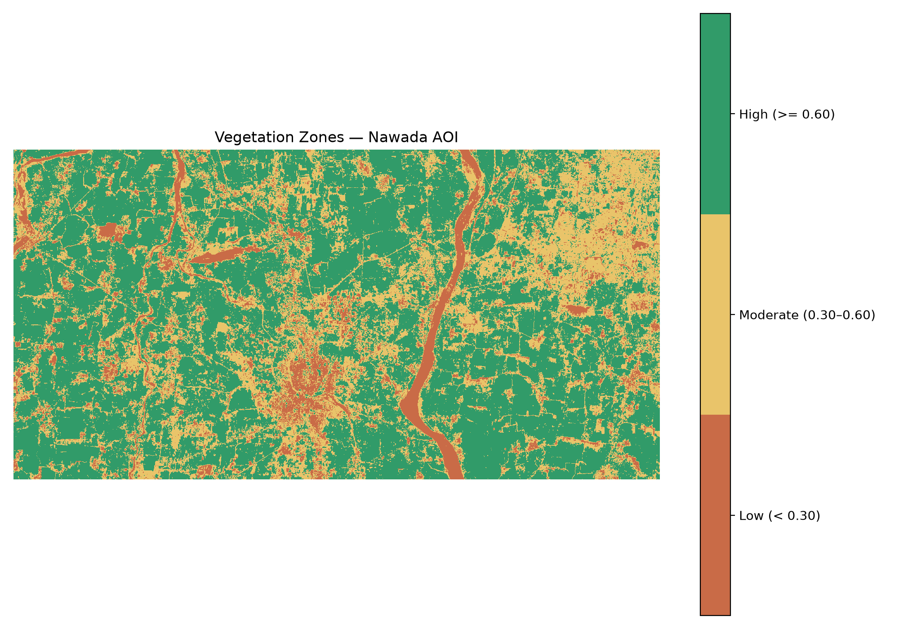
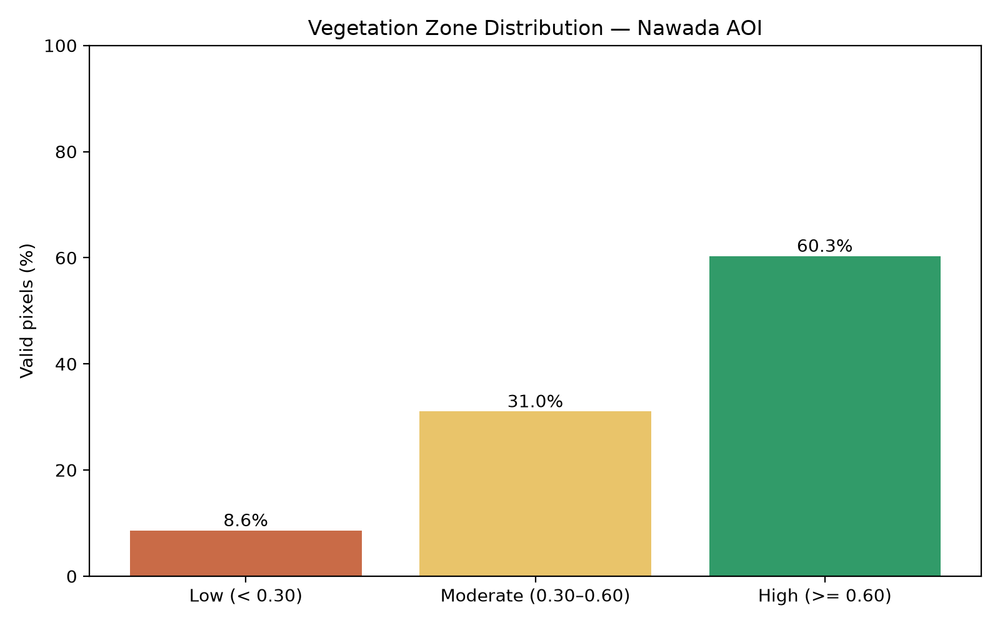
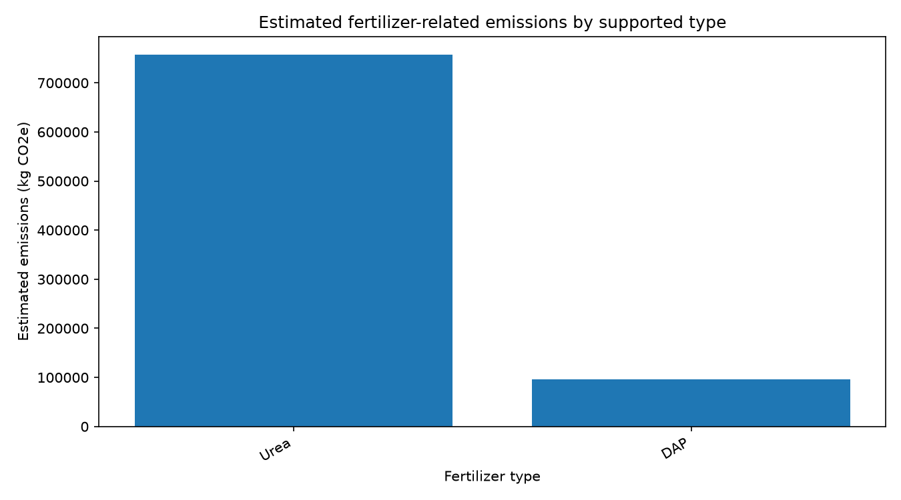
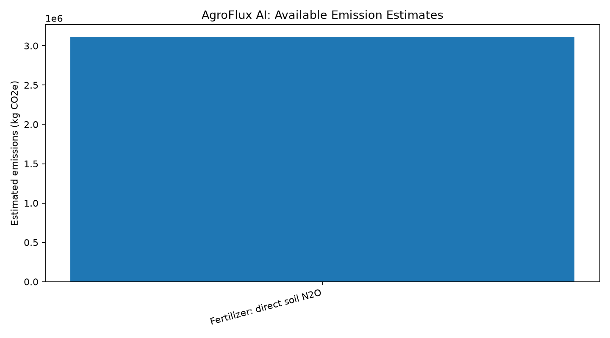
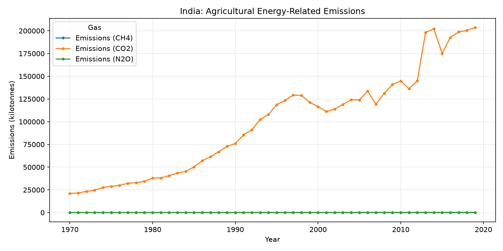

Project Overview
Valid satellite pixels
33,473
Pixels included in NDVI analysis
Mean NDVI
0.3667
Scene-level vegetation index
Fertilizer records estimated
1,396 / 1,658
262 records were not calculated
ML yield estimate
5,605.75 kg/ha
Baseline model output; not validated
Satellite & Vegetation Analysis
Vegetation Zones

Vegetation Distribution

Fertilizer Emissions Analysis
Estimated Emissions by Fertilizer Type

Carbon Emissions by Source

India Emissions Trend

Limitations & Responsible Use
Carbon engine: Diesel and electricity activity data were not found. Complete farm emissions totals are unavailable; do not interpret this as zero emissions.
Fertilizer estimates: Default emission factors are used for supported products. These are partial estimates, not a complete life-cycle assessment.
ML model: The training sample and prediction quality are not fully validated. The displayed yield is a model estimate, not a guaranteed or measured yield.
Satellite analysis: NDVI zones are screening categories, not a diagnosis of crop health or nutrient deficiency.
Fertilizer estimates: Default emission factors are used for supported products. These are partial estimates, not a complete life-cycle assessment.
ML model: The training sample and prediction quality are not fully validated. The displayed yield is a model estimate, not a guaranteed or measured yield.
Satellite analysis: NDVI zones are screening categories, not a diagnosis of crop health or nutrient deficiency.